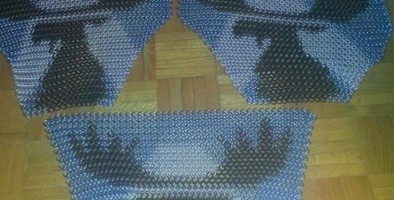

How can I play Amtgard?
Step One: Just come out on a Sunday
Don’t worry about trying to make weapons, we have some to loan out. Most important is to wear comfortable clothing, layers if it’s cold, and good footwear. First time out, don’t try to be the hero. Just have fun, die a lot, and watch how the game works. If you got hit, just take it. One other thing you can do is try to think of a character name. Don’t worry if you pick a bad one, you can always change it later. It’s how we keep track of attentance and what class you’ve played. If you’ve got some garb (clothes) that look a bit Medieval, feel free to wear it. Doesn’t matter if you made it or not, plenty of time for that later. Introduce yourself on field and someone will set you up and explain things. We play this game because of the people and the variety they bring to the game. Don’t forget to sign a waiver and to put your name and the class you played on the sign-in sheet. How you “level up” is by taking a credit every week in 1 class that you played.
Step Two: Read the rulebook
On your first time out you should just be concerned with learning a bit of the combat and reacting to what people said happened to you. If you like what you see, then it’s time to have a look at the rules of the game. The great thing about Amtgard is that the rules are the same across all the parks so you can go anywhere and play the game. Have a quick look at the classes both melee and magic. Sometimes a melee class can be a bit easier to start with but don’t let that stop you from looking at the great magic classes. If you are still unclear on combat, go to page 6 and also read Armor Made Easy on page 9. Everyone needs to know about states and those are explained quickly on page 47 and with clarity on 51. Those pages also touch on Magic. If you want to start playing a Caster then you need to understand magic points and how to appy those to pick your spells from level 1. Talk to someone on field, preferrably the Guildmaster for that class because they are the experts.

Step Three: Start crafting
Amtgard is as much about combat as it is about learning new things and making your own equipment or making gifts for others. Felfrost often has Arts & Sciences nights hosted at a members house. You can even earn awards for your work including Owls for weapons, Dragons for the arts and Garbers for your garb. There are lots of amazing crafters, role players, quest writers and fighters in Felfost and you might also be able to bring something new to our group.
Step 4: Get Involved
Once you understand how Amtgard works both in terms of the game and in terms of Official positions, you too can get involved. Serving your park can be rewarding both personally and through awards and titles. Mostly it’s about growning the park and making it a place other Amtgarders and new people want to join in. You can make a difference like our current Officers do!